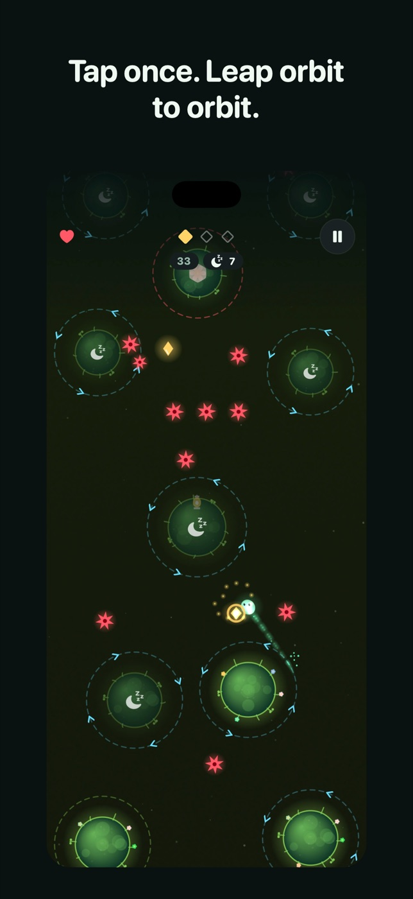
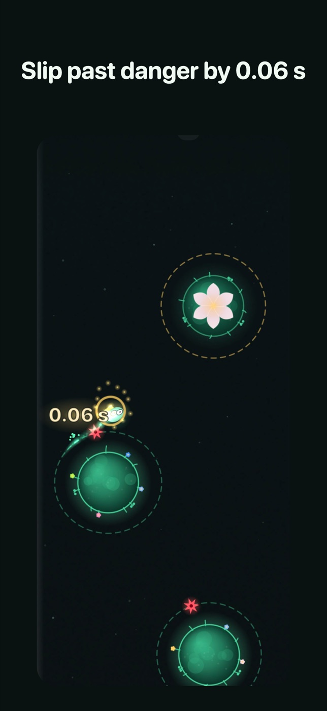
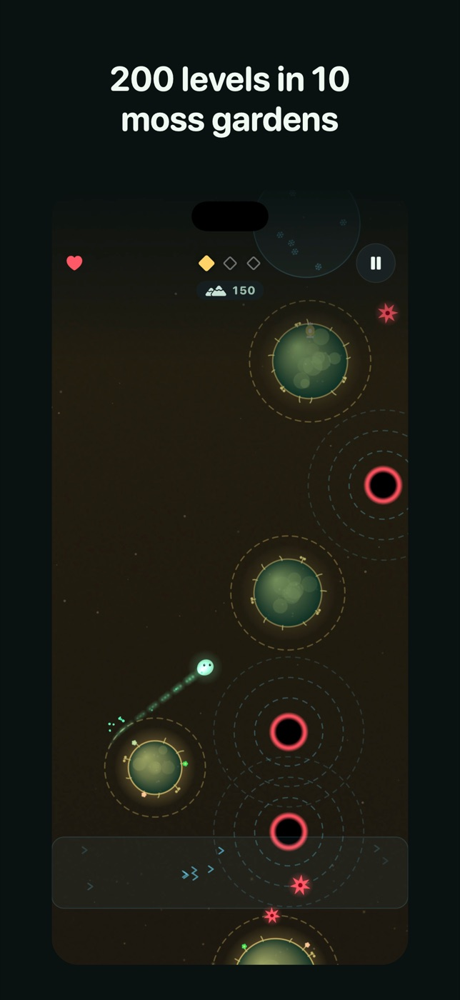
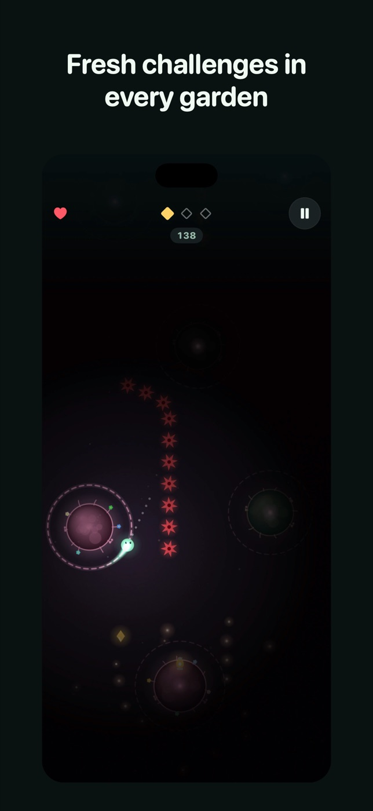
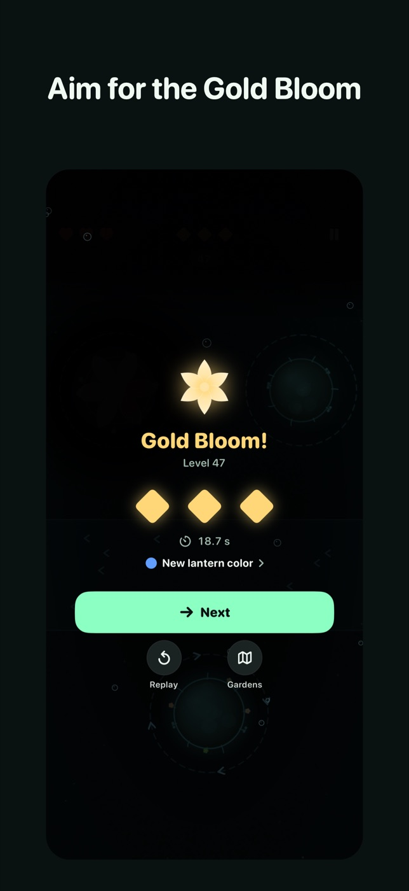
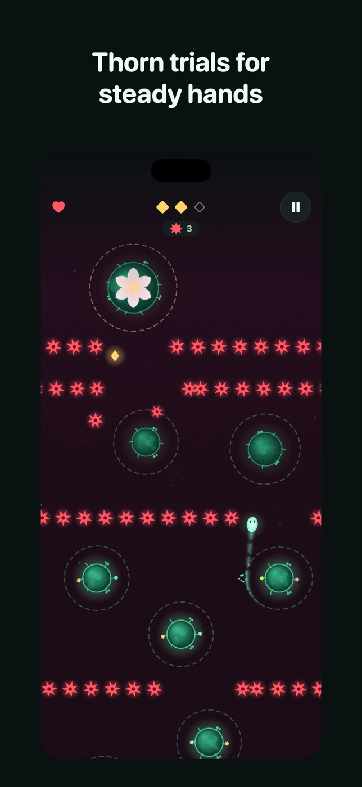
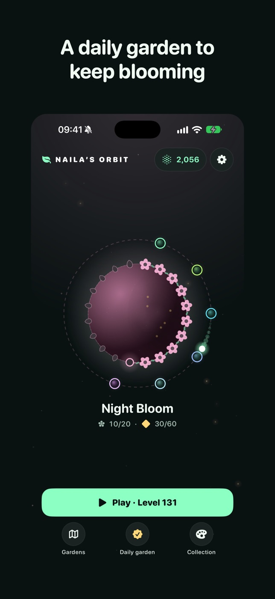
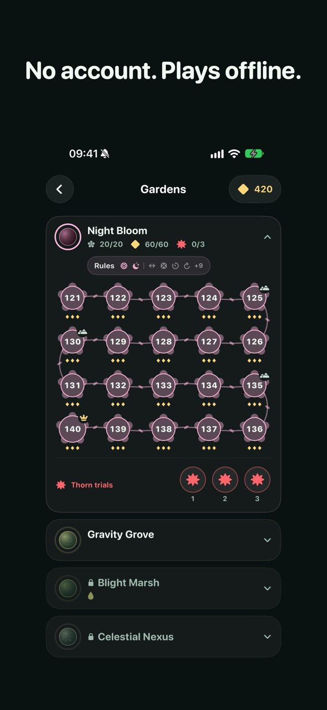

Press kit
Naila’s Orbit is a one-tap orbit game for iPhone: tap once to leap from orbit to orbit, slip past danger by a hair and make the bud bloom.
Coming to the App Store for iPhoneFacts
| Developer | Abbas Asadov, a solo developer in Baku, Azerbaijan |
|---|---|
| Platform | iPhone, iOS 17 or later |
| Price | Free, with short ads; nothing to buy |
| Content | 200 handcrafted levels in 10 gardens, 30 optional Thorn trials, a daily garden |
| Game Center | 43 achievements, 32 leaderboards |
| Languages | English, Azerbaijani, Turkish, Spanish, French, German, Japanese, Russian, Brazilian Portuguese |
| Contact | nailasorbit.help@gmail.com |
About the game
A small light circles a moss island. Tap anywhere and it leaps straight ahead toward the next ring. Time it well, fly through the golden seeds and make the bud bloom.
The calm look hides real tension. When you clear danger by a fraction of a second, time slows for a moment and the margin floats up, like 0.06 s. Each garden adds its own ideas: thorns, wilting islands, currents, comets, gates, frost, portals, night, gravity wells and a chasing blight, and later gardens bring back what the earlier ones taught.
Features
- One-tap play with near misses shown to the hundredth of a second, in slow motion
- 200 handcrafted levels, each proven beatable by the game’s own solver
- Gold Bloom medals for flawless runs and optional Thorn trials for steady hands
- Original music for every garden and detailed haptics
- No account; plays offline
Video
Icon
Download the icon (1024 × 1024)

Screenshots
















Videos of the game
You may stream Naila’s Orbit and monetize your videos of it. A link to the game is appreciated.